Elementary & Middle School
The project organizes academic life around a continuous courtyard landscape, where curved classroom wings, shaded circulation, and civic outdoor space create a softer and more connected environment for students and teachers.
Open movement, visible gathering space, and integrated planting guide the campus identity and shape the daily rhythm of arrival, study, play, and social exchange.
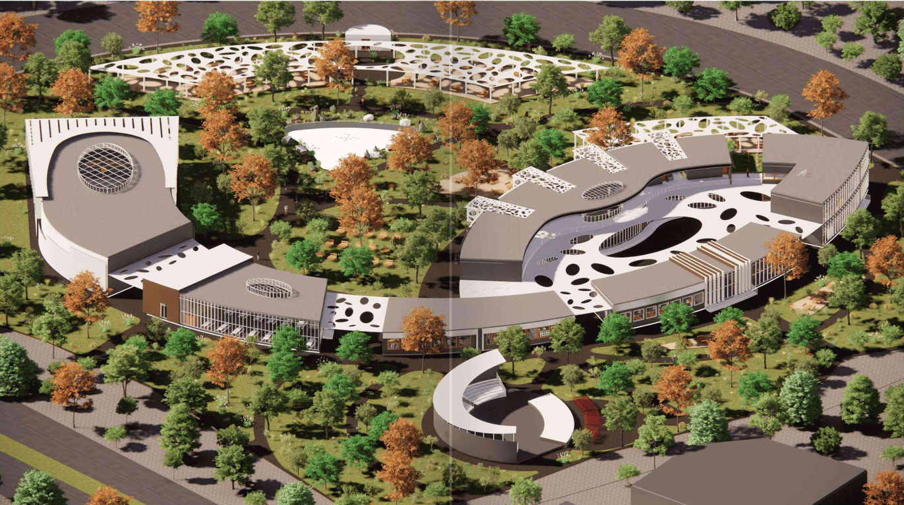
Concept
The concept material shows a campus that reduces travel distance, builds a social heart through the main courtyard, and uses perforated shading, planted buffers, and open circulation to combine environmental comfort with everyday visibility and interaction.
Curved paths and linked academic wings turn circulation into part of the educational experience instead of a leftover corridor system.
The central court works as a collective ground where students and staff meet, gather, and remain visually connected across the campus.
Patios, roof openings, shading layers, and planted edges help manage heat, daylight, and ventilation in a calmer architectural language.
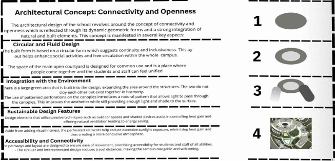
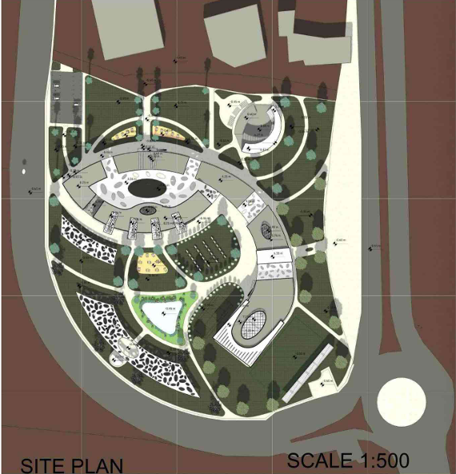
Showcase
The renderings shift between aerial views, interior atmosphere, and facade fragments so the project reads as a complete educational environment rather than a single formal gesture.
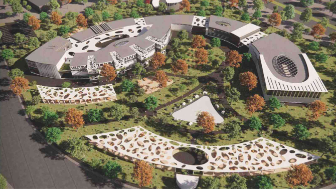
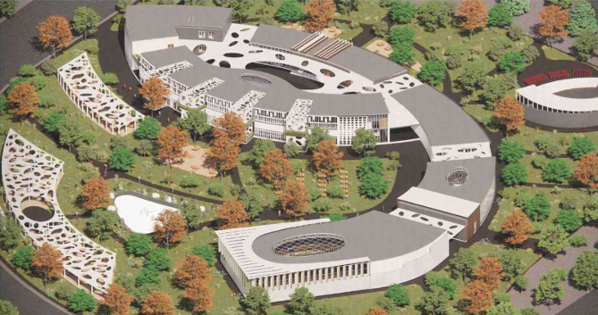
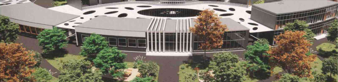
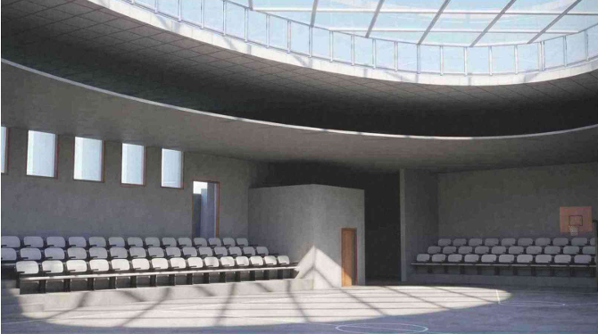
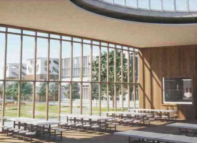
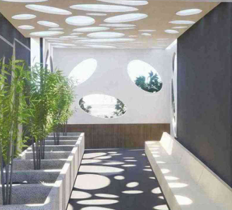
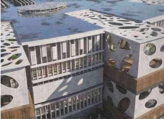
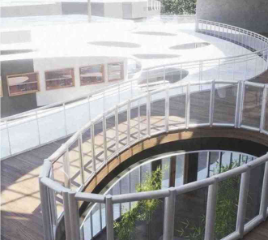
Drawings
Plans, elevations, and sections clarify how the curved classroom bands, sports zone, courtyard, and structural logic are coordinated across the project at both planning and construction scale.
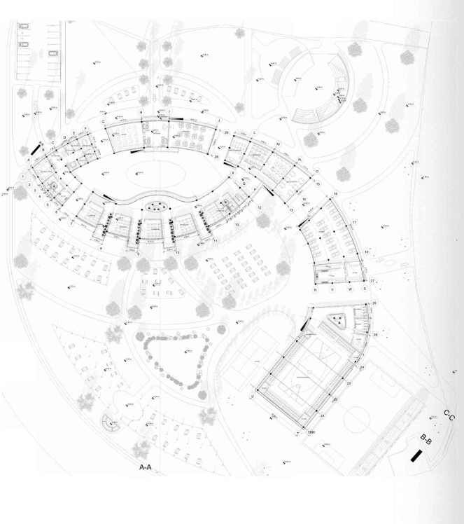
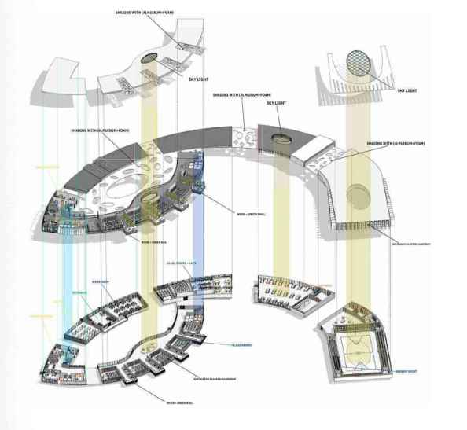
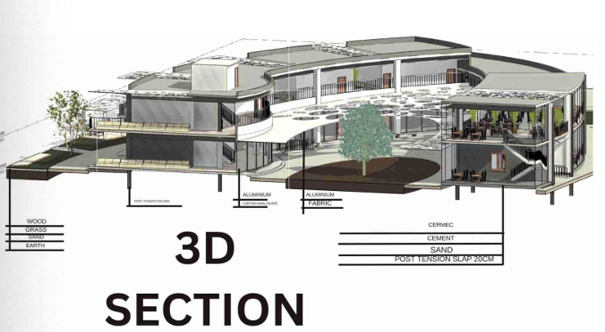
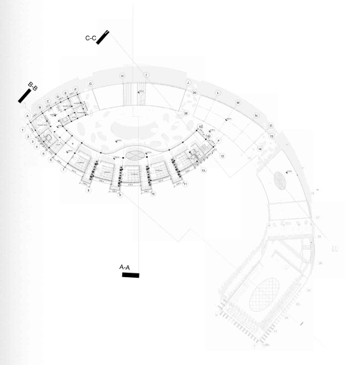
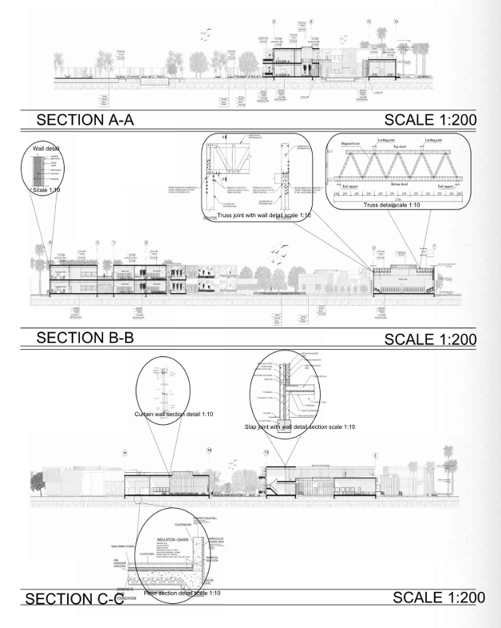